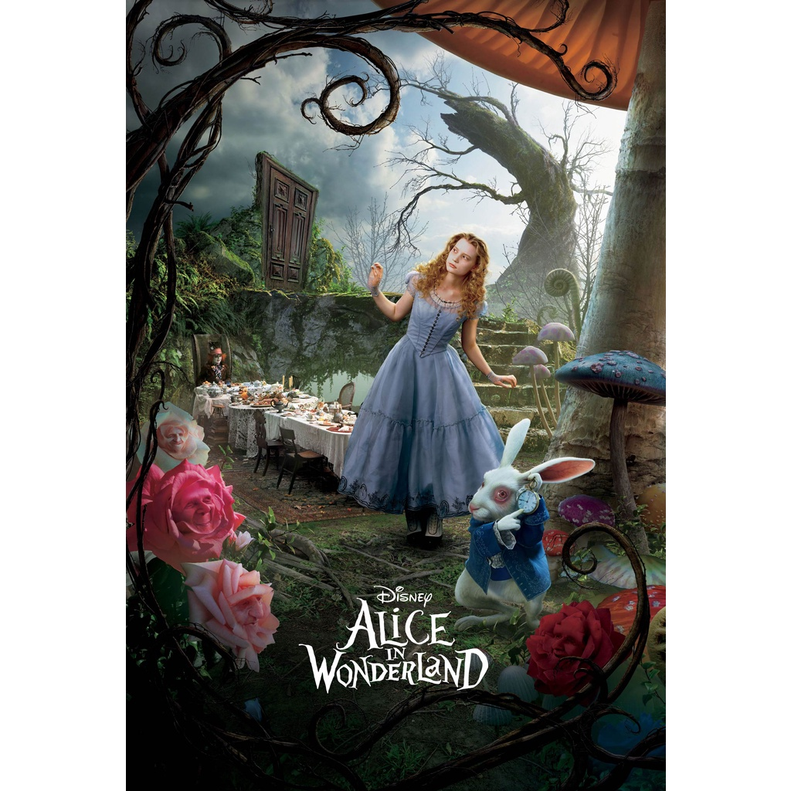
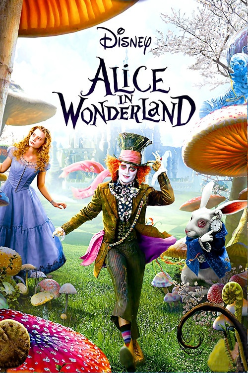

Alice é uma jovem menina muito curiosa que, ao seguir um apressado e peculiar Coelho Branco de colete e relógio, cai em uma toca profunda. Esse caminho a leva diretamente ao País das Maravilhas, um mundo mágico governado por uma lógica totalmente nonsense e povoado por criaturas icônicas, como o enigmático Gato de Cheshire, o excêntrico Chapeleiro Maluco e a tirânica Rainha de Copas. É uma das animações mais clássicas e inventivas da Disney.

Eu gosto muito deste filme porque ele é completamente imersivo em uma realidade alternativa, funcionando como uma verdadeira fuga da realidade monótona que a garota vive — algo que eu também busco constantemente nos livros. É um mundo alternativo, fascinante e profundamente criativo, repleto de personagens marcantes que acreditam que ser diferente e "louco" não é um defeito, mas sim algo genuinamente positivo.